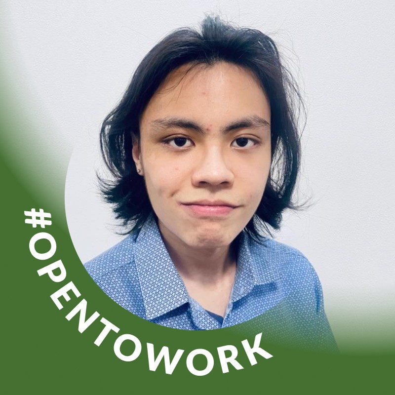

Gabriel Camargo
Desenvolvedor Front-end
Especialista em interfaces intuitivas e acessíveis, Gabriel garante que o sistema seja fácil de usar por todos, incluindo pessoas com necessidades especiais.

Yan Hideki
Designer e UX
Yan foca em criar uma experiência agradável e acessível, usando princípios de design universal para garantir inclusão e usabilidade máxima.